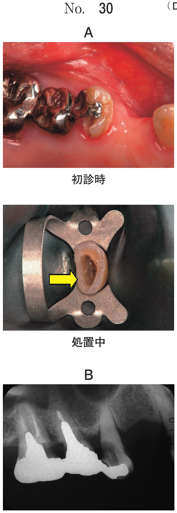

骨切除術・骨整形術
骨整形術 vs 骨切除術（国試頻出）
| 骨整形術（osteoplasty） | 骨切除術（ostectomy） | |
|---|---|---|
| 固有歯槽骨 | 削除しない | 削除する |
| 歯槽骨頂の高さ | 術前と同じ | 減少する |
| 歯冠歯根比 | 変化なし | 大きくなる |
| 適応 | 棚状の歯槽骨辺縁、骨隆起、外骨症 | 骨クレーター、ヘミセプター、浅い2〜3壁性骨欠損 |
骨整形術（osteoplasty）
固有歯槽骨を削除しないで歯槽骨の形態を生理的形態にする術式。歯槽骨頂の高さは術前と同じ。
- 適応：厚い棚状の歯槽骨辺縁、骨隆起、外骨症
- 歯周形成手術には含まれない（115B56）
骨切除術（ostectomy/osteoctomy）
歯周病変部の歯を支持している固有歯槽骨を除去して、歯槽骨の形態を生理的形態にする術式。
- 歯槽骨頂の高さは減少する
- 歯冠歯根比（crown root ratio）が大きくなる
- 適応：骨クレーター、ヘミセプター状骨欠損、浅い2〜3壁性骨欠損
骨移植術
骨移植術の目的
- プロービングポケットデプスの減少
- アタッチメントレベルの回復（アタッチメントゲイン）
- 生理的な歯槽骨の形態回復
- 歯周組織（骨、セメント質、歯根膜）の再生
骨再生の3条件（国試最頻出）
| 条件 | 定義 |
|---|---|
| 骨形成能 | 移植材中の前骨芽細胞・骨芽細胞が新生骨形成を促進する能力 |
| 骨誘導能 | 移植材中の増殖因子が未分化間葉系細胞を骨芽細胞に分化誘導する能力 |
| 骨伝導能 | 移植材が骨芽細胞の遊走・増殖の足場を提供する能力 |
骨移植材の種類と特性
| 移植材 | 骨形成能 | 骨誘導能 | 骨伝導能 | 特徴 |
|---|---|---|---|---|
| 自家骨 | ○ | ○ | ○ | ゴールドスタンダード、唯一の骨形成能 |
| 同種骨（DFDBA） | × | ○ | ○ | 脱灰凍結乾燥骨、日本では未認可 |
| 異種骨（Bio-Oss等） | × | × | ○ | ウシ由来、BSEリスク |
| 人工骨（β-TCP） | × | × | ○ | 生体吸収性あり、骨置換される |
| 人工骨（HA） | × | × | ○ | 非吸収性、骨置換されにくい |
重要：自家骨のみが骨形成能を持つ。β-TCPは吸収され骨置換される。
関連過去問
115D53
自家骨とβ-TCPでともに認められるのはどれか。2つ選べ。
a 骨形成能
b 骨伝導能
c 骨誘導能
d 免疫原性
e 生体吸収性
b 骨伝導能
c 骨誘導能
d 免疫原性
e 生体吸収性
正解：b, e
【解説】自家骨は骨形成能・骨誘導能・骨伝導能すべてを持つ。β-TCPは人工骨で骨伝導能のみ。両者に共通するのは骨伝導能と生体吸収性（β-TCPは徐々に吸収され骨置換される、自家骨も吸収・置換される）。骨形成能は自家骨のみ、骨誘導能も自家骨のみ（β-TCPにはない）。
115B56
歯周形成手術［歯肉歯槽粘膜形成術］はどれか。2つ選べ。
a 骨移植術
b 歯肉切除術
c 小帯切除術
d 歯槽骨整形術
e 結合組織移植術
b 歯肉切除術
c 小帯切除術
d 歯槽骨整形術
e 結合組織移植術
正解：c, e
【解説】歯周形成手術は歯肉歯槽粘膜の形態異常を修正する手術。小帯切除術と結合組織移植術が該当。歯槽骨整形術は歯周形成手術に含まれない（骨に対する処置）。骨移植術も歯周形成手術ではない。
109D44
52歳の女性。左側の下顎臼歯部の歯肉腫脹を主訴として来院した。┌6に根分岐部病変は認めない。慢性歯周炎と診断し歯周基本治療を行った。初診時の口腔内写真（別冊No.44A）とエックス線写真（別冊No.44B）を別に示す。再評価時の歯周組織検査結果の一部を表に示す。
次に行うのはどれか。1つ選べ。


a 新付着術
b 歯根分離
c 歯根切除
d 骨移植術
e 歯肉切除術
b 歯根分離
c 歯根切除
d 骨移植術
e 歯肉切除術
正解：d
【解説】エックス線で垂直性骨欠損が認められ、根分岐部病変がない症例。歯周基本治療後の残存ポケットに対して骨移植術が適応となる。歯根分離・歯根切除は根分岐部病変に対する処置。